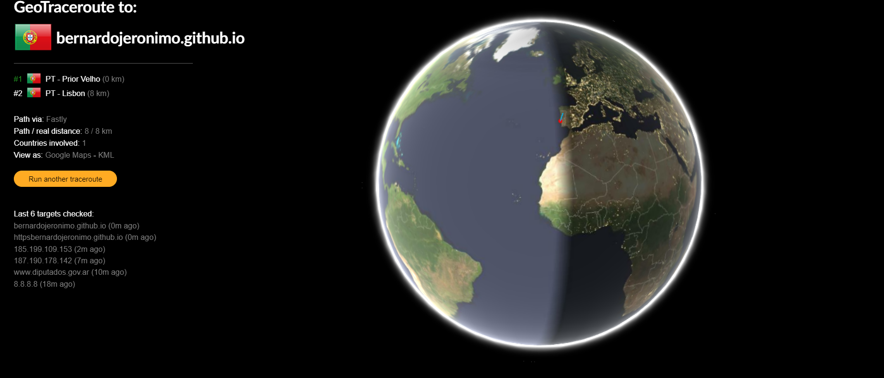

Ao por os dados que foram dados no enunciado apareceu-me isto no site que não corresponde com a localização do meu site
Ao olhar para a imagem reparei que o inspect apresenta o tempo de resposta do site com meu computador. Aparecendo também ficheiros descarregados para poder conseguir visualizar o site da forma correta.
Ficheiros:
Tipo de ficheiro:
Timing de espera:
Timing de descarga: